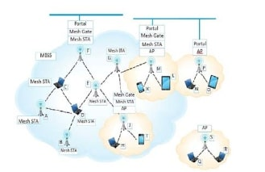

I am currently a PhD Student at Machine Learning and Perceptron Lab, University of Udine, Italy.I mainly focus on low-level vision research, especially on image and video restoration, such as super-resolution, deblurring and denoising.
Blind image super-resolution (SR) aims to recover high-resolution images without knowing the degradation. Existing methods often require ground-truth kernels and heavy networks. This work proposes a lightweight model (PL-IDENet) that implicitly learns degradations using a novel loss and a learnable Wiener filter. The method achieves better accuracy with significantly fewer parameters and computations.
A critical analysis of the conventional and agile methodologies has been presented on the bases of risk assessment and mitigation.

Wireless Mesh Network IEEE802.11s
Farooq Ahmed,Zain ul Abedin Butt,Asif Hussain Khan, Jabar Mehmodd, Nadeem Sarwar, Atizaz Ali, Muzamil Mehmoob, Ahmed Waqas.
International Journal of Computer Science and Information Security, 2016
IJCSIS /
bibtex
Describes the mechanism, architecture and its latest amendments in the family of IEEE 802.11 wireless mesh network which is named as 802.11s.
{kind=link}